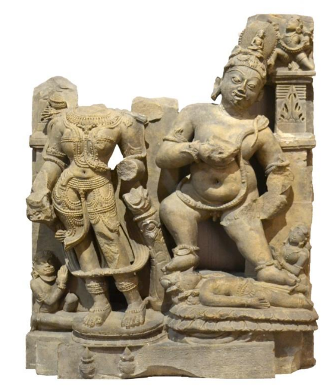

Jambhal and Vasudhara bearing Buddhist creed at the pedestal (head broken) on the right. The figures of Jambhal, the Buddhist god of wealth, with his female counterpart Vasudhara. The god is dwarfish with a prominent belly and short legs. The god is depicted nude, but he wears cobras as bracelets, armlets and anklets. He is also wearing a snake in the manner of Brahmanical thread 'yajnopavita'. His teeth are visible between his lips and from the corners of the lips protrude crooked tusks. He is holding a bowl against his chest. His left hand is broken, but with traces of a tail, it can be presumed that he was holding a mongoose in this hand. Jambhala's counterpart Vasudhara's (goddess of plenty) head and left arm are broken off. The sculpture is datable to 10th - 11th century C.E.
दाहिनी ओर पीठिका पर बौद्ध धर्म के प्रतीक चिन्ह धारण किए जम्भल और वसुधारा (सिर टूटा हुआ) हैं। बौद्ध धर्म के धन के देवता जम्भल की आकृतियाँ उनकी समकक्षी वसुधारा के साथ हैं। देवता बौने शरीर में प्रदर्शित हैं, उनका पेट बाहर निकला हुआ है और पैर छोटे हैं। देवता को नग्न दिखाया गया है, लेकिन उन्होंने कंगन, बाजूबंद और पायल के रूप में नाग धारण किए हुए हैं। उन्होंने ब्राह्मणीय सूत्र यज्नोपवीत (जनेऊ) की तरह एक साँप भी धारण किया हुआ है। उनके दाँत उनके होठों के बीच दिखाई दे रहे हैं और होठों के कोनों से टेढ़े-मेढ़े दाँत निकले हुए हैं। वह अपनी छाती से एक कटोरा पकड़े हुए हैं। उनका बायाँ हाथ टूटा हुआ है, लेकिन पूँछ के निशान होने से यह अनुमान लगाया जा सकता है कि उन्होंने इस हाथ में नेवला पकड़ा हुआ था। जम्भल की समकक्षी वसुधारा (प्रचुरता की देवी) का सिर और बायाँ हाथ टूटा हुआ है। यह मूर्ति 10वीं-11 वीं शताब्दी ई. की है।